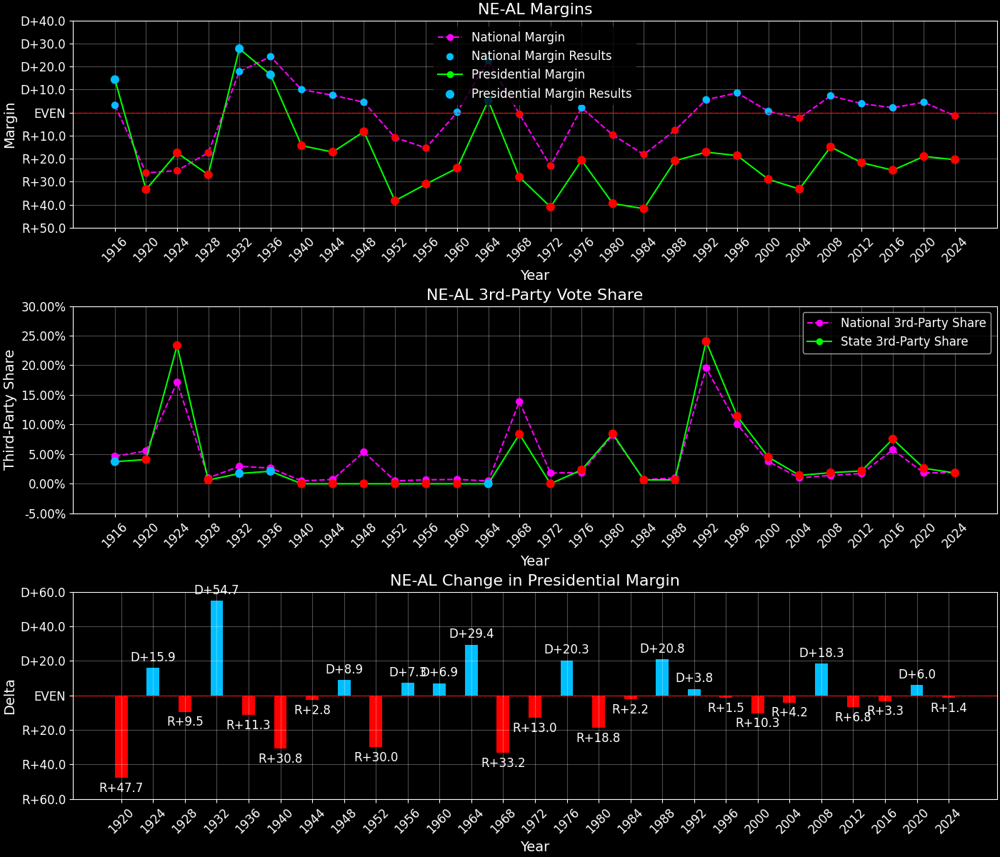
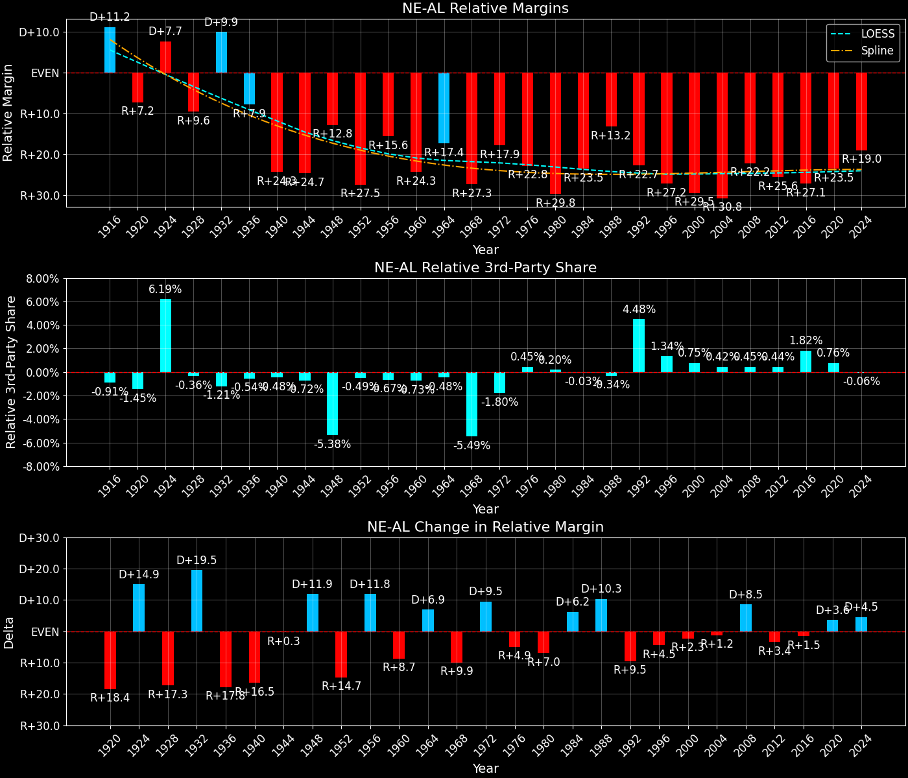
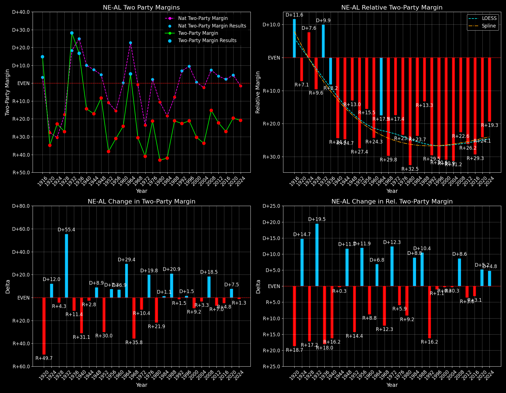

← Back to Map

Margins · 3rd-Party share · Pres. deltas

Relative margins · Relative 3rd-Party · Rel. deltas
Nebraska (NE-AL) — Total Data
| Year | EVs | D | R | State Margin | Nat. Margin | Rel. Margin | Total votes |
|---|
| 1968 | 2 | 170,784(31.8%) | 321,163(59.8%) | R+28.0 | R+0.6 | R+27.4 | 536,851 |
| 1972 | 2 | 169,991(29.5%) | 406,298(70.5%) | R+41.0 (Δ R+13.0) | R+23.5 (Δ R+23.0) | R+17.5 (Δ D+10.0) | 576,289 |
| 1976 | 2 | 233,692(38.5%) | 359,705(59.2%) | R+20.7 (Δ D+20.3) | D+2.2 (Δ D+25.7) | R+22.9 (Δ R+5.5) | 607,668 |
| 1980 | 2 | 166,424(26.0%) | 419,214(65.5%) | R+39.5 (Δ R+18.8) | R+9.9 (Δ R+12.1) | R+29.6 (Δ R+6.7) | 639,704 |
| 1984 | 2 | 187,866(29.0%) | 460,054(71.0%) | R+42.0 (Δ R+2.5) | R+18.1 (Δ R+8.2) | R+23.9 (Δ D+5.7) | 647,920 |
| 1988 | 2 | 259,235(39.4%) | 397,956(60.6%) | R+21.1 (Δ D+20.9) | R+7.7 (Δ D+10.4) | R+13.4 (Δ D+10.5) | 657,191 |
| 1992 | 2 | 217,344(29.4%) | 344,346(46.6%) | R+17.2 (Δ D+3.9) | D+5.6 (Δ D+13.3) | R+22.8 (Δ R+9.4) | 739,278 |
| 1996 | 2 | 236,761(35.0%) | 363,467(53.7%) | R+18.7 (Δ R+1.5) | D+8.6 (Δ D+3.0) | R+27.3 (Δ R+4.5) | 677,411 |
| 2000 | 2 | 231,780(33.3%) | 433,862(62.2%) | R+29.0 (Δ R+10.3) | D+0.5 (Δ R+8.0) | R+29.5 (Δ R+2.2) | 697,021 |
| 2004 | 2 | 254,328(32.7%) | 512,814(65.9%) | R+33.2 (Δ R+4.2) | R+2.5 (Δ R+3.0) | R+30.8 (Δ R+1.2) | 778,186 |
| 2008 | 2 | 333,319(41.7%) | 452,979(56.7%) | R+15.0 (Δ D+18.2) | D+7.3 (Δ D+9.7) | R+22.2 (Δ D+8.5) | 798,444 |
| 2012 | 2 | 302,081(38.0%) | 475,064(59.8%) | R+21.8 (Δ R+6.8) | D+3.9 (Δ R+3.4) | R+25.6 (Δ R+3.4) | 794,351 |
| 2016 | 2 | 284,446(33.7%) | 495,847(58.7%) | R+25.0 (Δ R+3.3) | D+2.1 (Δ R+1.8) | R+27.1 (Δ R+1.5) | 844,052 |
| 2020 | 2 | 374,583(39.2%) | 556,846(58.2%) | R+19.1 (Δ D+6.0) | D+4.4 (Δ D+2.3) | R+23.5 (Δ D+3.6) | 956,383 |
| 2024 | 2 | 369,995(38.9%) | 564,816(59.3%) | R+20.5 (Δ R+1.4) | R+1.5 (Δ R+6.0) | R+18.9 (Δ D+4.6) | 952,182 |
Column explanations
- Δ
- Change (delta) in the value from the previous election year.
- Year
- Election year.
- EVs
- Number of electoral votes allocated to this state or unit.
- D
- Number of votes for the Democratic candidate (raw count(pct%)).
- R
- Number of votes for the Republican candidate (raw count(pct%)).
- State Margin
- Margin between the two major-party candidates, including third-party votes ((D - R)/total).
- Nat. Margin
- The national presidential margin for that year, including third-party votes ((D_total - R_total)/total_votes).
- Rel. Margin
- The presidential margin relative to the national presidential margin (Margin - Nat. Margin).
- Total votes
- Total voter turnout or ballots cast (when provided).
Nebraska (NE-AL) — Third-Party Data
| Year | Other votes | State 3rd-Party Share | 3rd-Party Nat. Share | 3rd-Party Rel. Share |
|---|
| 1968 | 44,904(8.4%) | 8.36% | 13.59% | -5.22% |
| 1972 | 0(0.0%) | 0.00% | 0.09% | -0.09% |
| 1976 | 14,271(2.3%) | 2.35% | 0.33% | 2.02% |
| 1980 | 54,066(8.5%) | 8.45% | 6.98% | 1.48% |
| 1984 | 0(0.0%) | 0.00% | 0.12% | -0.12% |
| 1988 | 0(0.0%) | 0.00% | 0.21% | -0.21% |
| 1992 | 177,588(24.0%) | 24.02% | 19.23% | 4.79% |
| 1996 | 77,183(11.4%) | 11.39% | 9.68% | 1.71% |
| 2000 | 31,379(4.5%) | 4.50% | 3.65% | 0.85% |
| 2004 | 11,044(1.4%) | 1.42% | 0.84% | 0.58% |
| 2008 | 12,146(1.5%) | 1.52% | 1.38% | 0.14% |
| 2012 | 17,206(2.2%) | 2.17% | 1.62% | 0.54% |
| 2016 | 63,759(7.6%) | 7.55% | 5.54% | 2.02% |
| 2020 | 24,954(2.6%) | 2.61% | 1.84% | 0.77% |
| 2024 | 17,371(1.8%) | 1.82% | 1.88% | -0.06% |
Column explanations
- Year
- Election year.
- Other votes
- Number of votes for third-party (other) candidates (raw count(pct%)).
- State 3rd-Party Share
- Share of the vote received by third-party (other) candidates.
- 3rd-Party Nat. Share
- The national third-party share for that year (3rd-Party votes / total votes).
- 3rd-Party Rel. Share
- Third-party share relative to the national third-party share (3rd-Party share - Nat. 3rd-Party share).

Two-party margins · relative · deltas
Nebraska (NE-AL) — Two-Party Data
| Year | 2-Party Margin | 2-Party Nat. Margin | 2-Party Rel. Margin |
|---|
| 1968 | R+30.6 | R+0.7 | R+29.9 |
| 1972 | R+41.0 (Δ R+10.4) | R+23.6 (Δ R+22.9) | R+17.4 (Δ D+12.4) |
| 1976 | R+21.2 (Δ D+19.8) | D+2.2 (Δ D+25.8) | R+23.4 (Δ R+6.0) |
| 1980 | R+43.2 (Δ R+21.9) | R+10.6 (Δ R+12.8) | R+32.5 (Δ R+9.1) |
| 1984 | R+42.0 (Δ D+1.2) | R+18.1 (Δ R+7.5) | R+23.9 (Δ D+8.6) |
| 1988 | R+21.1 (Δ D+20.9) | R+7.8 (Δ D+10.4) | R+13.3 (Δ D+10.5) |
| 1992 | R+22.6 (Δ R+1.5) | D+6.9 (Δ D+14.7) | R+29.5 (Δ R+16.2) |
| 1996 | R+21.1 (Δ D+1.5) | D+9.5 (Δ D+2.6) | R+30.6 (Δ R+1.1) |
| 2000 | R+30.4 (Δ R+9.2) | D+0.5 (Δ R+8.9) | R+30.9 (Δ R+0.3) |
| 2004 | R+33.7 (Δ R+3.3) | R+2.5 (Δ R+3.0) | R+31.2 (Δ R+0.3) |
| 2008 | R+15.2 (Δ D+18.5) | D+7.4 (Δ D+9.8) | R+22.6 (Δ D+8.6) |
| 2012 | R+22.3 (Δ R+7.0) | D+3.9 (Δ R+3.4) | R+26.2 (Δ R+3.6) |
| 2016 | R+27.1 (Δ R+4.8) | D+2.2 (Δ R+1.7) | R+29.3 (Δ R+3.1) |
| 2020 | R+19.6 (Δ D+7.5) | D+4.5 (Δ D+2.3) | R+24.1 (Δ D+5.2) |
| 2024 | R+20.8 (Δ R+1.3) | R+1.6 (Δ R+6.1) | R+19.3 (Δ D+4.8) |
Column explanations
- Δ
- Change (delta) in the value from the previous election year.
- Year
- Election year.
- 2-Party Margin
- Margin between the two major-party candidates, ignoring third-party votes ((D - R)/(D + R)).
- 2-Party Nat. Margin
- The national presidential margin for that year, including third-party votes ((D_total - R_total)/total_votes).
- 2-Party Rel. Margin
- The presidential margin relative to the national presidential margin (Margin - Nat. Margin).